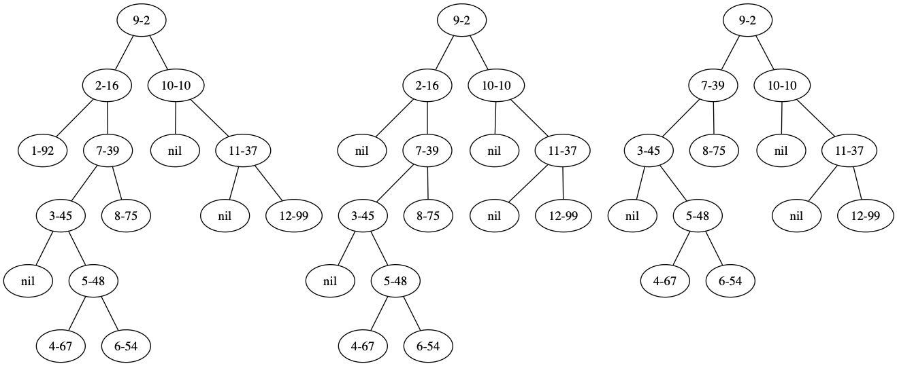

简单的treap
treap的确是比较简单的二叉树。虽然它不是平衡树，但是通过随机化生成的priority可以确保树不会太高。 treap应该是tree + heap得来的，tree是因为它是一个二叉树，heap则要求父节点的priority必须小于子树的priority（ 这很像堆的特性)。又因为priority是随机生成的，所以可以通过随机化来减小树高。
treap也需要有旋转操作，当priority不满足的时候也需要进行旋转。删除某个节点的话，可以将这个节点的priority设置为infinity, 然后不断地下沉到叶子上，最后删除这个叶子就好了。但是因为涉及到旋转，所以插入和删除函数都是递归的。
def left_rotate(r: TreeNode, rl: TreeNode):
if r.priority <= rl.priority:
return r
r.left = rl.right
rl.right = r
return rl
def right_rotate(r: TreeNode, rr: TreeNode):
if r.priority <= rr.priority:
return r
r.right = rr.left
rr.left = r
return rr
def insert_tree_node(root: TreeNode, t: TreeNode):
if root is None:
return t
if t.val < root.val:
root.left = insert_tree_node(root.left, t)
root = left_rotate(root, root.left)
elif t.val > root.val:
root.right = insert_tree_node(root.right, t)
root = right_rotate(root, root.right)
else:
pass
return root
def delete_tree_node(root: TreeNode, val):
if root is None:
return None
if val < root.val:
root.left = delete_tree_node(root.left, val)
return root
elif val > root.val:
root.right = delete_tree_node(root.right, val)
return root
root.priority = 1 << 30 # mark this node priority as high enough
if root.left and ((root.right is None) or (root.left.priority < root.right.priority)):
root = left_rotate(root, root.left)
root.right = delete_tree_node(root.right, val)
elif root.right and ((root.left is None) or (root.left.priority >= root.right.priority)):
root = right_rotate(root, root.right)
root.left = delete_tree_node(root.left, val)
else: # left and right are None
assert root.left is None and root.right is None
return None
return root
同样为了看看插入节点和删除节点的变化，可以使用graphviz来做可视化。我们逆序插入1-12这些数值，然后删除1，2节点，看看每次变化。 因为priority是随机数，所以为了确保确定性，最好设置上随机数的种子。
def test_pprint_tree():
root = None
stream = StringIO()
random.seed(23)
N = 12
for val in range(N, 0, -1):
root = insert_tree_node(root, TreeNode(val))
# tree_to_dot(root, 'ins {}'.format(val), stream)
tree_to_dot(root, 'now', stream)
delete_tree_node(root, 1)
tree_to_dot(root, 'delete 1', stream)
delete_tree_node(root, 2)
tree_to_dot(root, 'delete 2', stream)
dot_to_graph('/tmp/example', stream.getvalue(), type='png')
